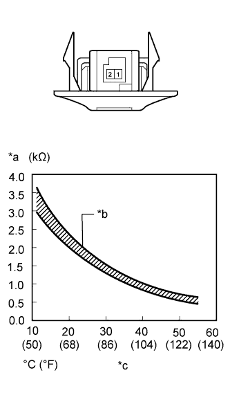

DTC B1419/19 Rear Room Temperature Sensor Circuit |
| DTC Code | DTC Detection Condition | Trouble Area |
| B1419/19 | Open or short in the cooler thermistor (rear room temperature sensor) circuit. |
|
| 1.READ VALUE USING INTELLIGENT TESTER (REAR ROOM TEMPERATURE SENSOR) |
Use the Data List to check if the rear room temperature sensor is functioning properly (Click here).
| Tester Display | Measurement Item/Range | Normal Condition | Diagnostic Note |
| Room Temp Sensor (Rear) | Cooler thermistor (rear room temperature sensor) / Min.: -6.5°C (20.3°F) Max.: 57.25°C (135.05°F) | Actual rear cabin temperature displayed | Open in the circuit: -6.5°C (- 20.3°F). Short in the circuit: 57.25°C (135.05°F). |
| Result | Proceed to |
| OK (When troubleshooting according to problem symptoms table) | A |
| OK (When troubleshooting according to the DTC) | B |
| NG | C |
|
| ||||
|
| ||||
| A | ||
| ||
| 2.INSPECT COOLER THERMISTOR (REAR ROOM TEMPERATURE SENSOR) |
|  |
Remove the cooler thermistor (rear room temperature sensor) (Click here).
Measure the resistance according to the value(s) in the table below.
| Tester Connection | Condition | Specified Condition |
| 1 - 2 | 10°C (50°F) | 3.00 to 3.73 kΩ |
| 15°C (59°F) | 2.45 to 2.88 kΩ | |
| 20°C (68°F) | 1.95 to 2.30 kΩ | |
| 25°C (77°F) | 1.60 to 1.80 kΩ | |
| 30°C (86°F) | 1.28 to 1.47 kΩ | |
| 35°C (95°F) | 1.00 to 1.22 kΩ | |
| 40°C (104°F) | 0.80 to 1.00 kΩ | |
| 45°C (113°F) | 0.65 to 0.85 kΩ | |
| 50°C (122°F) | 0.50 to 0.70 kΩ | |
| 55°C (131°F) | 0.44 to 0.60 kΩ | |
| 60°C (140°F) | 0.36 to 0.50 kΩ |
| *a | Resistance |
| *b | Allowable Range |
| *c | Temperature |
|
| ||||
| OK | |
| 3.CHECK HARNESS AND CONNECTOR (REAR ROOM TEMPERATURE SENSOR - AIR CONDITIONING AMPLIFIER) |
Disconnect the G12 amplifier connector.
Disconnect the Q21 sensor connector.
Measure the resistance according to the value(s) in the table below.
| Tester Connection | Condition | Specified Condition |
| Q21-1 - G12-17 (TR) | Always | Below 1 Ω |
| Q21-2 - G12-7 (SG-6) | Always | Below 1 Ω |
| Q21-1 - Body ground | Always | 10 kΩ or higher |
| Q21-2 - Body ground | Always | 10 kΩ or higher |
|
| ||||
| OK | ||
| ||